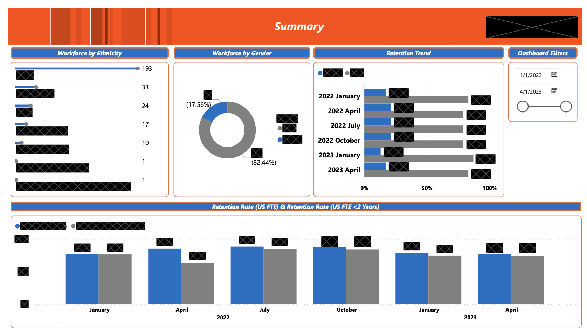
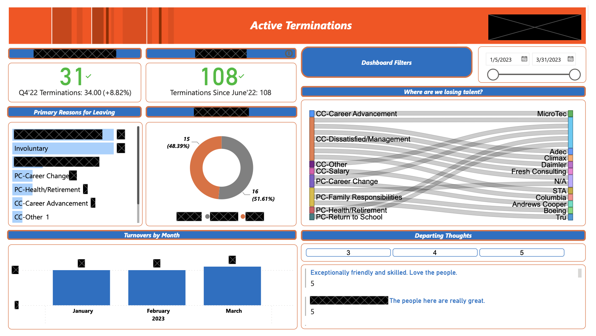
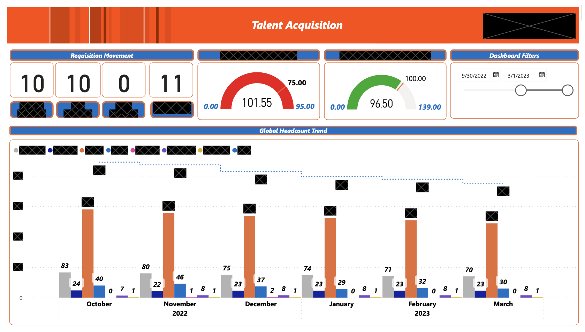

Human Resources Analytics Dashboard
Overview
Presented here is a real-life Power BI Dashboard that I crafted for a previous organization, offering a glimpse into the intricate web of key performance indicators (KPIs) and metrics vital for organizational success. Divided into distinct sections, each segment of the dashboard delivers unique insights tailored to the organization’s overarching objectives.
In essence, the Power BI Dashboard serves as a beacon guiding decision-makers through the labyrinth of organizational performance. By facilitating real-time monitoring, trend identification, and data-driven decision-making, it fosters a holistic approach to performance management.
The accompanying visuals further enrich the narrative, offering succinct summaries and insights into critical facets of organizational dynamics. The HR summary, for instance, delves into workforce demographics, retention trends, and diversity metrics, serving as a compass for inclusive talent management strategies.
The HR summary offers a detailed overview of the workforce demographics, including ethnicity, gender, and retention trends. It is a vital tool for assessing diversity, inclusion efforts, and identifying areas for improvement.
Demographic Analysis: Displays the composition of the workforce by ethnicity and gender.
Retention Trends: Showcases turnover rates, average tenure, and reasons for employee departures.

Terminations
Likewise, the Terminations Summary lays bare the landscape of employee departures, providing valuable insights into turnover patterns and contributing factors. Complemented by legal compliance considerations, it serves as a cornerstone for optimizing HR processes.
This summary provides insights into employee terminations, categorizing them by reasons such as voluntary resignations, involuntary dismissals, and retirements.
Termination Reasons: Helps identify patterns in employee departures.
HR Process Optimization: Offers insights for improving employee engagement and performance management processes.

Talent Summary
Finally, the Talent Summary emerges as a beacon for talent management, leveraging data insights to inform strategic decisions on acquisition, development, and retention. Together, these summaries form an arsenal of actionable insights, empowering organizations to navigate the complexities of talent dynamics with precision and foresight.
The Talent Summary provides an overview of the organization’s talent management, focusing on acquisition, development, and retention.
Talent Acquisition: Analyzes the effectiveness of recruitment strategies.
Employee Development: Tracks progress and impact of training programs.
Retention Strategies: Evaluates the success of initiatives aimed at retaining top talent.

Conclusion
The Human Resources Analytics Dashboard is an indispensable tool for organizational leaders, providing comprehensive insights into financial performance, sales trends, customer satisfaction, and workforce dynamics. By facilitating data-driven decision-making, it empowers the organization to enhance performance management, drive growth, and foster a culture of continuous improvement.